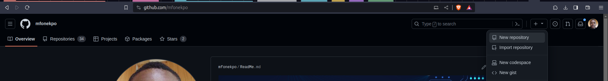
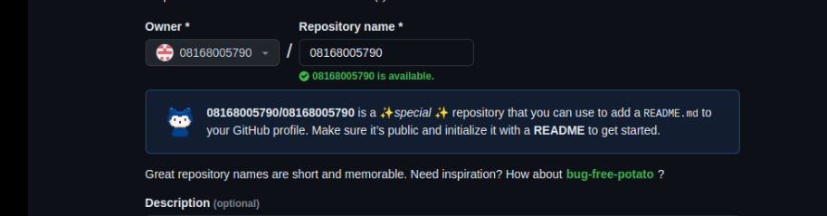
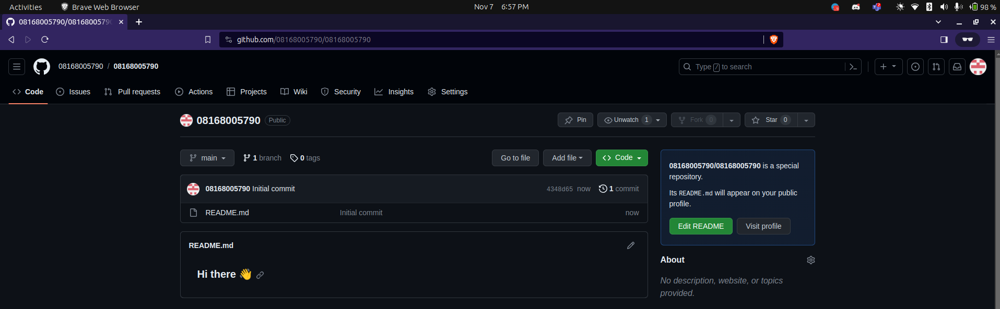
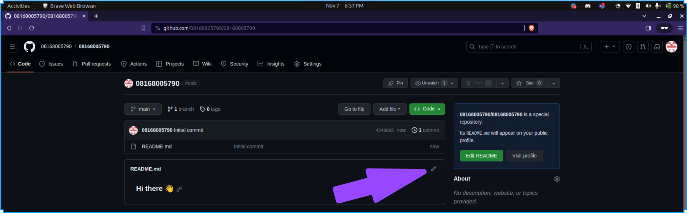

Lesson_02
Overviewpages_course/lessons/lesson_template.qmd
In this lesson, we will embark on a journey to create your very own profile page on github using Markdown, a lightweight and easy-to-use syntax for styling all forms of writing on the web. Markdown is widely used because it allows you to maintain the readability of plain text while offering the styling capabilities of HTML. Our goal is to familiarize you with the foundational elements of Markdown to transform plain text into a rich, well-formatted document.
Throughout the lesson, we will explore the basic constructs of Markdown, such as headers, emphasis, lists, links, and images, which will serve as the building blocks for your profile page. You will learn how to structure content with different levels of headings and how to emphasize text using bold and italic styles to make your page more engaging.
Additionally, we will delve into creating ordered and unordered lists to organize your skills and achievements in a visually appealing manner. We will also cover the process of incorporating hyperlinks and images, enabling you to link to projects or personal works and add a personal touch with your photo.
By the end of this lesson, you will have crafted a personal profile page that not only tells your story but also showcases your newfound Markdown skills. This profile can serve as a starting point for your portfolio, a personal webpage, or a GitHub README file, providing a snapshot of your professional persona to the world. As a hands-on approach to learning, you will actively engage in writing Markdown, receiving immediate visual feedback, and iterating on your design to create a compelling and informative profile page.
Learning Objectives
Students will be able to recognize and apply markdown syntax to create structured and styled text documents.
Students will be able to organize content using headers to create clear hierarchy and flow within their profile page.
Students will be able to emphasize key aspects of their profile using bold and italic text formatting.
Students will be able to construct ordered and unordered lists to list accomplishments, skills and interests effectively.
Students will be able to embed hyperlinks and connect their profile to personal projects, professional networks, or external references.
Students will be able to insert images to personalize their profile page, making it more visually engaging.
Students will be able to craft a concise biography or personal statement that reflects their individual journey and aspirations.
Students will be able to utilize blockquotes to highlight personal mottos.
Students will be able to implement code blocks and inline code to showcase technical skills or highlight programming projects.
Students will be able to create a comprehensive and visually appealing profile page that can be shared and viewed on various platforms, including Github and personal blogs.
Lesson
What is a Github Profile README?
Since the beginning of this lesson, we’ve actually made mention of github profile readme, and I believe some of you don’t really have an idea what it is all about.
A GitHub profile README is a special repository that you can create to add a README file to your GitHub profile. It acts as a customizable “about me” section where you can introduce yourself, showcase your work, and share information about your interests, projects, or achievements.
When someone visits your GitHub profile, the content of this README is displayed prominently, so it’s a great way to make a first impression on people who are exploring your GitHub repositories or looking to learn more about you as a developer or contributor.
To create a GitHub profile README, you simply create a new repository that has the same name as your GitHub username. For example, if your username is octocat, you would create a repository named octocat. Inside this repository, you place a README.md file. Whatever you write in the README.md file using Markdown will appear on your GitHub profile.
[We will include an image of the sample github profile and how it will look like in this section]
In the next section, we will look at the steps taken to create a github README file for a github profile.
Creating a github profile README file
- Log in to GitHub.
- Click on + icon at top right of the page and select New Repository.

- A Create a new repository page opens. In the Repository name field, enter the username of your GitHub account. After entering the username, GitHub displays a message describing that you’re about to create a GitHub special repository.

Check the public checkbox under repository type to make the Github profile README visible to everyone who visits the Github profile page. If you don’t want users to see your Github profile README while it’s still in development, you can choose Private. Once done with editing the README, you can go to the repo settings to change it’s visibilty to Public.
Check the Add a README file checkbox. This will add a
README.mdfile where we’ll add the profile contents. The field values should look similar to the image below.

- Click on the Create repository button. A special repository is created successfully. Go to the repository you just created and you’ll see a README.md file added to the repository.

In the next few sections, we’ll add contents to our README.md file. We’ll use Github’s file editor to write and preview the changes. There are other text editor which you can use as well such as Vs Code Editor, Sublime Text, Atom etc. But making use of this editors, you will have to clone the repository on your local machine and run changes needed. You can look that up at your own free time.
But for this lesson, we shall be making use of Github file editor. Open the README.md file and click on the Edit this file icon (a pencil icon) on the top right of the repo page. As highlighted in the image below:

{kind=link}
Practice Activity
[This is where we assign students a task to practice what they have learned. This should largely correlate with the Lesson Objectives from up above.]
[Wrap-up by restating what should have been learned in this lesson. Then tease other lessons.
example: You should now have your own github profile and should be equipped to help others make one as well. In the next lesson you will learn how to add a profile page to your profile that shows others what make you unique and what particular skills you have.]
FAQ
[This is where we will post common questions students have while doing a lesson along with answers to those questions. This list will likely grow as more students take the course and we learn what they struggle with]
What is two-factor authentication?
Two-factor authentication is when you use an additional tool to sign into your account such as a text message or an authenticator app. Two factor authentication helps provide an extra layer of security when signing in to keep your data safe. The first factor is almost always your password. The second factor is usually something that a hacker is unlikely to have access to like an authenticator app on your cell-phone.